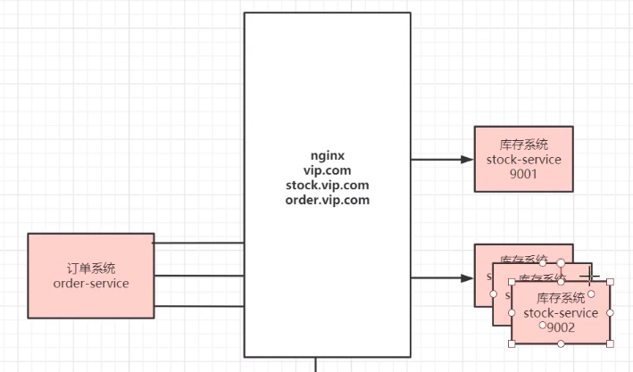
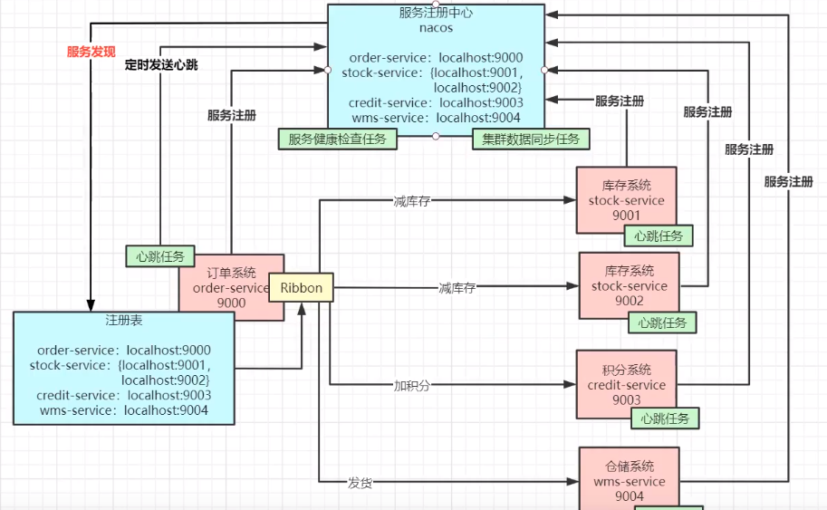
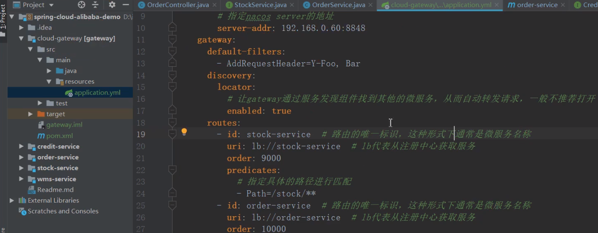

[TOC]
https://github.com/alibaba/spring-cloud-alibaba/blob/master/README-zh.md

增加减少机器需要频繁修改配置

基于Ribbon算法的负载均衡

Feign：通过动态代理，实现对远程服务的调用。
Sentinel 切入点，从流量控制、熔断降级、系统负载保护等多个维度保护服务的稳定性。
【Sentinel（一）】Sentinel介绍与使用 Sentinel 实战-控制台篇 Sentinel教程 https://github.com/alibaba/Sentinel/tree/master/sentinel-demo

关于Sentinel与Hystrix的区别见：技术选型：Sentinel vs Hystrix
总体来说：
Hystrix常用的线程池隔离会造成线程上下切换的overhead比较大；Hystrix使用的信号量隔离对某个资源调用的并发数进行控制，效果不错，但是无法对慢调用进行自动降级；Sentinel通过并发线程数的流量控制提供信号量隔离的功能；
此外，Sentinel支持的熔断降级维度更多，可对多种指标进行流控、熔断，且提供了实时监控和控制面板，功能更为强大。
Spring Cloud Alibaba：Sentinel实现熔断与限流
spring-cloud-starter-alibaba-sentinelfeign.sentinel.enabled: true@FeignClient(value = "nacos-user-service",fallback = UserFallbackService.class)
public interface UserService {
@PostMapping("/user/create")
CommonResult create(@RequestBody User user);
}
@Component
public class UserFallbackService implements UserService {
@Override
public CommonResult create(User user) {
User defaultUser = new User(-1L, "defaultUser", "123456");
return new CommonResult<>(defaultUser,"服务降级返回",200);
}
}
@RestController
@RequestMapping("/user")
public class UserFeignController {
@Autowired
private UserService userService;
@PostMapping("/create")
public CommonResult create(@RequestBody User user) {
return userService.create(user);
}
{
"data": {
"id": -1,
"username": "defaultUser",
"password": "123456"
},
"message": "服务降级返回",
"code": 200
}
@Transactional
public String createOrder(Long productId，Long userId，Integer stockCount，Integer creditCount) {
System.out.println("创建订单成功"); //T0D0
stockService.deductStock(productId，stockCount);
creditService.addCredit(userId，creditCount); // DEBUG: 停掉积分系统，不能报错
wmsService.delivery(userId，productId);
return"success";
}
seata.io/zh-cn/
@GlobalTransactional
整体机制：两阶段提交协议的演变：
对数据一致性的及时性要求不高的业务场景，尽量不适用分布式事务，因为Seata底层是加锁，降低了系统性能。
https://www.processon.com/view/link/5e69e768e4b07fc7a6841488

SpringCloud Gateway ： - 路由（服务转发） - 限流 - 安全认证（对请求统一校验权限）
